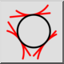
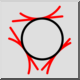
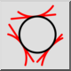
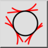

3 Tangenten
Werkzeugleiste / Symbol:
 

Menü: Zeichnen > Kreis > 3 Tangenten
Tastenkürzel: C, T, 3
Kommandos: circletangent3 | ct3
Werkzeugleiste / Symbol:
 

Menü: Zeichnen > Kreis > 3 Tangenten
Tastenkürzel: C, T, 3
Kommandos: circletangent3 | ct3
Zeichnet einen Kreis, der tangential zu drei Objekten verläuft.